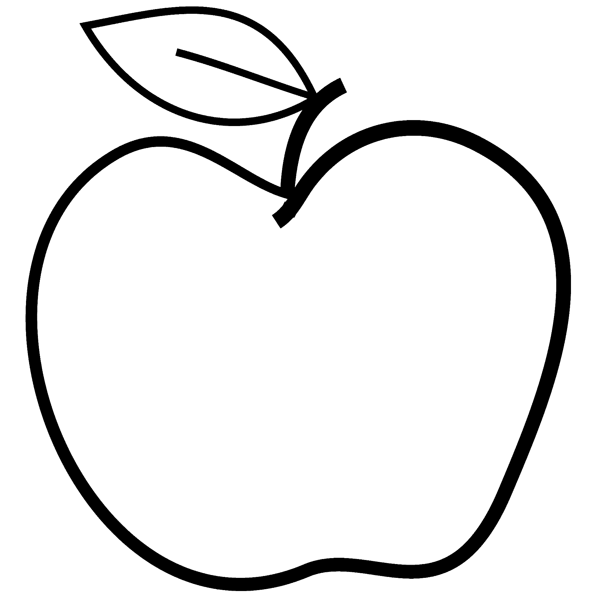
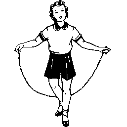

J'aime tous les genres de musique (sauf le country...)

J'aime me nourrir des quatres groupes alimentaires : la Pizza, les Sushis, les Tacos et le Bacon

J'aime disséquer les ordinateurs... et puis les réparer (souvent)

Je joue à la défense!

J'aime me perdre dans un bon jeu d'aventure ou de stratégie

J'aime fouetter mes orteils avec une corde de plastique à grande vitesse...

J'aime beaucoup apprendre, peu importe ce que c'est